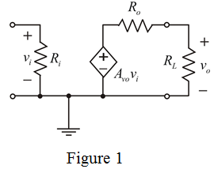

From Figure 1, apply voltage division rule and determine the value of  .
.
Determine the voltage gain.
Substitute for  in the equation.
in the equation.
Substitute  for
for  ,
,  for
for  and
and  for
for  in the equation.
in the equation.
Draw the open circuit voltage gain amplifier circuit diagram.

Convert the voltage gain from to linear value.
From Figure 1, apply voltage division rule and determine the value of .
Determine the voltage gain.
Substitute for in the equation.
Substitute for , for and for in the equation.
Convert the voltage gain into decibels.
Therefore, the voltage gain in decibels is .
Determine the power gain of the amplifier.
Substitute for  , for
, for  and
and  for
for  in the equation.
in the equation.
Therefore, the power gain in decibels is .
Consider the peak output current limitation, .
Determine the output voltage of the amplifier.

Substitute  for and
for and  for
for  in the equation.
in the equation.
Determine the input voltage.
Determine the root mean square value of input sine wave voltage.

Therefore, the root mean square value of input sine wave voltage is .
Determine the output power.
Therefore, the output power is .